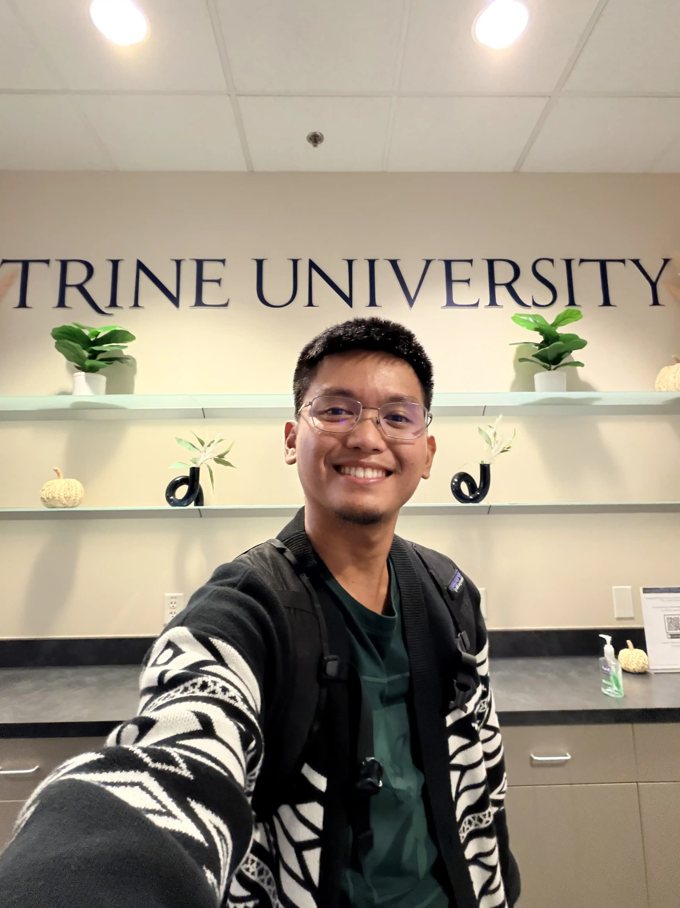

A quality-oriented DevOps Engineer with 10 years of experience in building systems and infrastructure.
As a former Software engineer, I have a strong foundation in coding and have applied that to my DevOps career
path.
System stability is my top priority. I build resilient, highly available architectures that keep services reliable and running smoothly.
Efficiency comes next. I simplify and streamline organizational processes through automation and workflows that improve productivity across teams.
I'm always up for a challenge and believe there is always something new to learn or another opportunity to automate.
If you by any chance need a determined and hard-working DevOps Engineer, feel free to reach out!

OpenTofu/Terrform | AWS | Kubernetes | GitOps | Atlantis | GitHub
A self-service infrastructure platform that enables engineers to declaratively define their application requirements and automatically provision their entire tech stack. By specifying a simple configuration, teams get a fully wired environment including a GitHub repository, AWS compute and storage resources, Kubernetes workloads, RBAC/permissions, and more — all managed through OpenTofu and delivered via GitOps with Atlantis. It removes the operational overhead of setting up and maintaining cloud infrastructure, letting engineers focus on shipping code instead of wrangling resources.
OpenTofu/Terraform | AWS (EKS, S3, IAM, Athena, VPC) | Atlantis | Python | Bash
From zero to a deployment-ready EKS cluster. This Infrastructure-as-Code(IaC) repository provisions and manages multi-environment, multi-account AWS infrastructure using OpenTofu, taking Kubernetes clusters from nothing to production-grade with a single codebase. It follows a GitOps workflow where infrastructure changes are planned and applied through pull requests, with CI pipelines enforcing linting and validation on every push. Reusable modules handle cross-cutting concerns like cluster backups, observability, analytics, and IAM.
Through my CPT experience as a DevOps engineer, I have learned that data-informed decision-making goes beyond reacting to dashboards and metrics alone. Metrics are valuable for identifying trends, risks, and opportunities, but they should be interpreted carefully and within context. A single metric can be misleading when viewed in isolation, and effective decisions require a more holistic view that combines data with real-world understanding. I've encountered the following during my practice, which reinforce the idea that data can be misleading when it lacks context.
These experiences have shown me that strong decision-making comes from combining quantitative evidence with critical thinking and contextual interpretation.
As a DevOps Engineer, process improvement is a core part of my day-to-day work. Many of the practices we follow align closely with Lean Six Sigma principles, particularly in reducing waste, improving consistency, and optimizing system-wide workflows. One of the most recognizable examples is the adoption of CI/CD (Continuous Integration and Continuous Delivery) pipelines, where code changes are automatically built, tested, and deployed through a standardized workflow, replacing manual deployments with faster and more reliable processes.
In our organization, which has grown through acquisitions, we encountered fragmented and inconsistent deployment workflows across teams. This created waste in the form of slow, unstable, and costly CI/CD infrastructure. Using a DMAIC-inspired approach, we defined the problem, measured inefficiencies across tools like Jenkins and CircleCI, and identified lack of standardization as a key root cause. We improved the process by consolidating these tools into a unified CI/CD platform built around a consistent deployment experience, with simple configuration options and self-documenting deployment configurations that reduce ambiguity and onboarding time.
Adoption initially faced resistance, but through phased onboarding, training, and clear documentation, the transition became seamless, reinforcing that process improvement depends on both system design and change management.
Through my CPT experience as a DevOps Engineer in the ad tech industry, I have developed a more practical understanding of how information systems and data governance are deeply connected to how we design and operate systems. While I primarily work on infrastructure, I regularly see how our platforms handle large volumes of user data that power targeting, analytics, and decision-making.
Learning about data governance helped me connect these day-to-day practices to broader governance concepts. For example, implementing access controls, enforcing data classification, and ensuring systems are audit-ready are not just operational tasks, but key components of maintaining trustworthy data systems. The principle of least privilege is something we consistently apply in the security domain, and I now better understand how it also supports data governance by limiting risk and reducing unnecessary exposure to sensitive data.
I also reflected more on data ethics, especially in an industry driven by user behavior. Just because data can be used does not always mean it should be used without consideration. This reinforced the importance of transparency, accountability, and fairness in system design. Overall, I now view data governance as an essential part of building reliable, scalable, and responsible systems.
This week reinforced an important concept: revenue growth alone does not guarantee profitability if costs are not effectively controlled. In a tech and software environment, this is especially relevant because resources are highly accessible through cloud providers, making it easy to overprovision infrastructure and unintentionally increase costs. Through financial analysis, I learned how metrics such as profitability ratios, efficiency ratios, and forecasting can guide more informed decision-making.
In my CPT experience as a DevOps engineer, I regularly encounter trade-offs between cost, efficiency, and operational complexity. For example, organizations can adopt managed SaaS solutions such as Salesforce, Datadog, or New Relic, which typically fall under operating expenses due to their recurring subscription model. These tools simplify operations but can significantly increase ongoing costs. Alternatively, teams can use open-source solutions, which reduce subscription expenses but require more internal resources to maintain, shifting costs toward operational overhead.
This experience highlights how financial analysis is essential in evaluating trade-offs, optimizing resource allocation, and ensuring that technical decisions align with long-term business profitability.
This week reinforced that successful change requires alignment between strategy, leadership, and execution, not just good ideas or data. Frameworks like Kotter's model highlight the importance of establishing a clear direction, building a strong coalition, and sustaining momentum. Reflecting on cases like the New Coke failure, I learned that organizations often struggle not because the solution is flawed, but because leaders fail to account for human behavior, identity, and resistance.
In my CPT experience as a DevOps engineer, I see these principles play out regularly. DevOps teams are often drivers of change, especially when introducing automation or modern infrastructure like Kubernetes. However, these changes can create resistance, particularly when they threaten existing workflows or an engineer's sense of relevance. Instead of viewing resistance negatively, I've learned to treat it as valuable feedback, aligning with the idea that effective leaders listen and adapt rather than force adoption.
Applying Kotter's principles, we focus on clearly communicating the direction, building stakeholder alignment, and delivering short-term wins through phased migrations. For example, gradually transitioning applications from legacy systems to containerized environments helped build trust and demonstrate value. Aligning strategy with leadership and human factors ensures that change is not only implemented, but sustained.